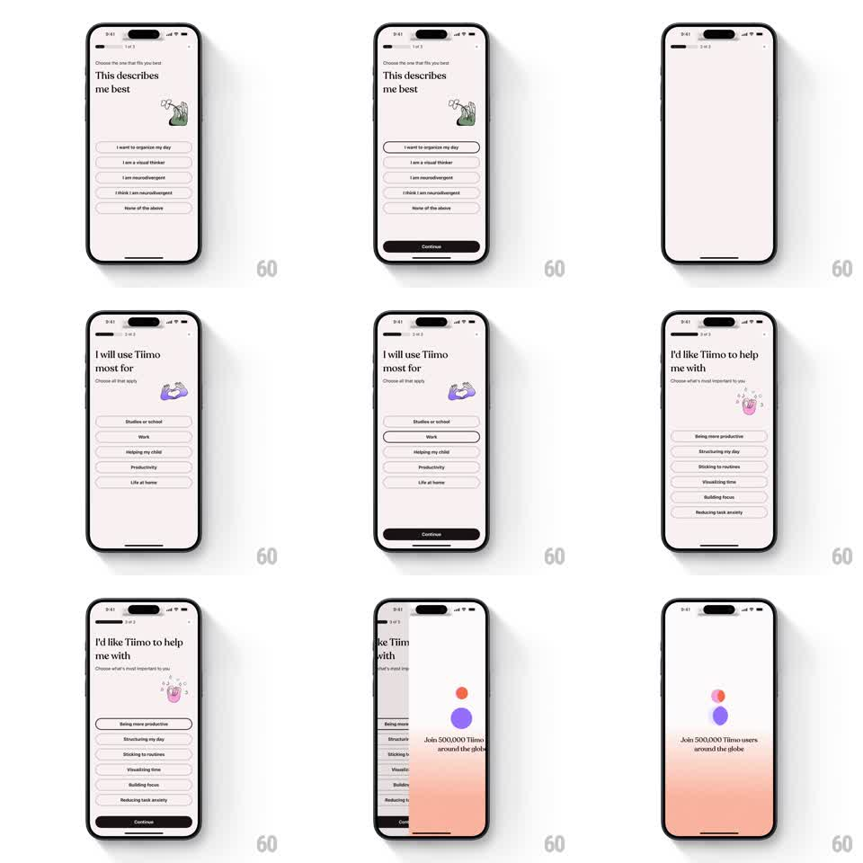

Media
Frame-by-frame

Rebuild this interaction 1:1: Tiimo's onboarding questionnaire - horizontal paging between question cards with springy slide-up action buttons, closing on a loading animation of circles that merge into one.

Rebuild this interaction 1:1: Tiimo's onboarding questionnaire - horizontal paging between question cards with springy slide-up action buttons, closing on a loading animation of circles that merge into one. ## Integration Integration: stack-agnostic spec - springs given as stiffness/damping, timed motions as duration + curve; map every value to your framework and animation library of choice. ## Scene A pastel onboarding flow of full-screen question cards (progress dots top). Each card: an illustration, a question, answer options, and a bottom Continue button. The final step transitions to a loading state where several colored circles drift together and merge into a single pulsing blob before the app reveals. ## Motion spec Pattern: horizontal pager + merging-circle loader. - Swipe or Continue advances: the current card slides left (spring stiffness ~300, damping ~30) while the next enters from the right, slightly scaled down (0.96) and scaling up as it lands. - Progress dots update with the active dot stretching into a pill (width animates, 200ms). - On each card, the illustration enters with a gentle pop (scale 0.9 to 1, spring ~350/22), the question text fades up (250ms), and the Continue button slides up from below (spring ~320/26) after a 100ms delay. - Answer selection: the chosen option fills with a quick scale bounce (0.98 to 1.02 to 1, 250ms). - Final Continue: cards give way to the loader - 4-5 colored circles start scattered, drift inward along ease-in-out paths (~900ms), merge into one blob with a soft squash, then the blob pulses (scale 1.0-1.08, 900ms loop) until content is ready; the blob then expands to fill the screen as a color wipe into the app. ## Calibration - Paging is gesture-driven 1:1 with a spring settle; tapping Continue uses the same distance at a fixed 350ms. - The merge reads as liquid: circles deform slightly as they approach, not rigid translation. ## Reduced motion Crossfade between cards; loader is a single static pulsing dot. ## Don't miss - Each card's pastel background tint is different and crossfades during the slide - the color is part of the page, not the chrome. - The merged blob's color blends the circle colors; it does not snap to a new hue.